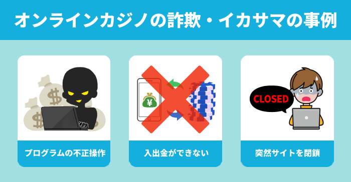
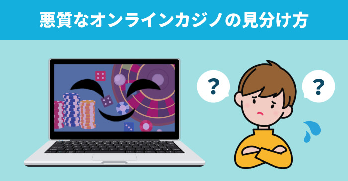
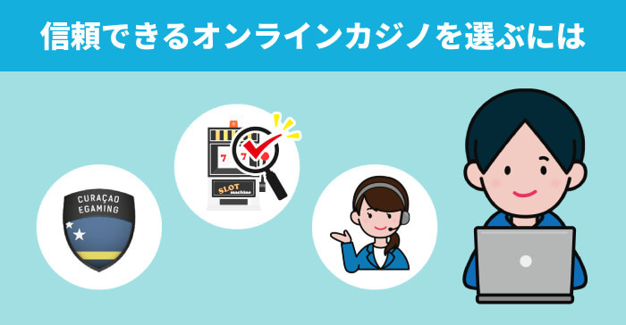

オンラインカジノとは？
初心者が安心して始めるための基礎講座

オンラインカジノとは？
初心者が安心して始めるための基礎講座
実際にお金を賭けてカジノゲームをネット上で遊ぶことができる「オンラインカジノ」。 日本でのカジノ解禁が話題となり、国内でもさらに人気が高まっています。
一方で興味はあるけれど、違法性や安全性が気になってなかなか手を出せないという方もいるのではないでしょうか？
当サイト（オンラインカジノ初心者ナビ）では、オンラインカジノの基本的な遊び方はもちろん、安全で信頼できるカジノの選び方などを徹底解説しています。
このようなオンラインカジノ初心者の方は是非ご覧になってください。
 著者：MASARU
著者：MASARUこのページでは、オンラインカジノに関する基本的な情報を全て掲載しています！
登録前に不安に思う方が多い違法や税金について、実際プレイする時に何のゲームをしたらいいのか？オンラインカジノは稼げるのか？など皆さんが迷ってしまいそうな項目をピックアップしてみました。
お試しで遊べる「無料プレイ」も用意してあるので、オンラインカジノのスロットの雰囲気を掴むこともできると思いますよ！
オンラインカジノ初心者ナビでは、「ボーナスが豊富」「人気がある」など5つの基準からベラジョンカジノやミスティーノなどおすすめの優良カジノサイトを紹介しています。カジノサイトをまだ選んでいない方は要チェックです！
オンラインカジノは場所や時間を気にすることなく遊べるため、つい熱中してお金を使い過ぎてしまうというリスクもあります。
特にクレジットカードの場合、手元に現金がなくても賭け金を入金することができるため、お金が減っている感覚も薄くなりがちです。
使い過ぎを防ぐためには、1回あたりに使って良い金額や「〇〇円まで使ったら止める」などのルールを決めてプレイしましょう。
また、いくらオンラインカジノの還元率が高いといっても、ギャンブルであることに変わりはありません。
タイミングによって大きく勝つこともあれば連敗することもあるので、安定した収入を得るには不向きです。
また、負け額を取り返すために生活費を削ったり、お金を借りるまでのめり込んでしまうと「オンラインカジノ依存症」に陥ってしまう可能性もあります。
そうならないためにも、オンラインカジノの勝利金で生活費を賄ったり副業にしようとせず、あくまで無理のない範囲で賭けてゲームを楽しむものと心掛けてプレイしてください。
オンラインカジノは現時点においては、ルールを守れば安全に楽しむことができるギャンブルです。
ですが、中にはライセンスを取得していないオンラインカジノや、詐欺サイトなどが存在しているのも事実です。
つまり、プレイヤーひとりひとりが「オンラインカジノの安全性や信頼度」を見極める必要があるということ。 ここからは、信頼できる優良オンラインカジノを見極めるためのポイントをご紹介しましょう。

この項目は、優良オンラインカジノを見極め、安全に楽しむための大前提とも言えるチェック内容です。
登録をする前に必ず確認をしましょう。
これらのポイントをチェックすることは、オンラインカジノを楽しむ上でとても重要です。
この条件がクリアできたオンラインカジノの中から、ボーナスの仕組みやゲーム数の多さなど、自分に合ったオンラインカジノを選ぶと良いでしょう。
信頼性の高さで当サイトがおすすめするのは、5つの条件を見事クリアしたベラジョンカジノ！
合法的に運営しており、プレイヤーがたくさん集まるオンラインカジノの場合、それなりに大きなお金が集まり、回していく必要があります。
つまり、安定した運営資金を確保できる企業力も大事になってくるということです。
オンラインカジノに登録する場合は、どんな企業がオンラインカジノを運営しているのかも、しっかりチェックしておきましょう。
悪質なサイトの特徴については「オンラインカジノの詐欺の手口を解説！危ないカジノを見分けるには？」で詳しく紹介しています。

「オンラインカジノは違法なのか？」ということに関しては、オンラインカジノをプレイする・しないに関わらず、誰しもが気になるところですよね。
皆様もご存知のことだと思いますが、競馬・競輪・宝くじなど国が認めたギャンブル以外は全て違法です。
その為、「オンラインカジノ＝違法」と考える方も多いようです。
オンラインカジノ自体は、海外で国が発行する運営許可証（ライセンス）を取得しているため、合法的に運営されています。
しかし、オンラインカジノの運営者とプレイヤーを罪に定める直接的な法律がないことや、今までの判例などもあり、「違法か合法かは明確にいえない」という状態が続いています。
当サイトとしましても、オンラインカジノは「違法とも合法ともいえない」というスタンスで情報を発信しております。
詳しくは「オンラインカジノは違法なのか？逮捕事例から違法性をチェック」で解説していますので、ぜひご覧になってください。

オンラインカジノでより稼ぐためには、資金管理や攻略法(必勝法・ベッティングシステム)を活用するのがコツです。
資金管理とは、その名のとおり収支のバランスを取りながらプレイすること。
ギャンブルで儲けるには、1回分の勝ち負けではなく「トータルしたときに利益が出ているか」が重要になります。
そのためには前述のとおり、設定した予算や勝ち逃げ・損切りなどのルールを徹底して守り、長期的に見て損失が出ないようなプレイをしましょう。
また、テーブルゲームでは攻略法と呼ばれる賭け方をすることで稼ぐチャンスを増やすことができます。
たとえば「マーチンゲール法」は、負けたらベット額を倍にしていき勝ったら最初の金額に戻すという方法で、一度勝てば損失分を取り戻すことができます。
連勝すれば利益をコツコツ積み上げることもできるので、高額勝利より損失額を最小限に抑えたい方向けの攻略法です。
反対に、勝つごとにベット額を倍に増やしていく「パーレー法」は、ある程度連勝した時点でゲームを終了すれば勝利金を確保できるため、短時間で利益を出したいときなどに有効です。
どちらの方法も負けたときのリスクはありますが、両方を組み合わせて使うことで、それぞれのデメリットをカバーしてより勝率を上げることも可能です。
ここで紹介した「マーチンゲール法」「パーレー法」は初心者の方にもわかりやすい比較的シンプルな攻略法なので、ぜひ実践しながら使い方を研究してみてはいかがでしょうか。
その他の攻略法やお役立ち情報については「【オンラインカジノ実践ブログ】初心者にありがちな悩みの解決方法を伝授！」のブログで詳しく紹介しています。
世界中に数千以上のオンラインカジノが存在するといわれている中、すべてが優良なサイトではないことは事実です。
そのため、
「どのオンラインカジノを選べばいいのかわからない」
「結局どこが安心できるオンラインカジノなの？」
と思ってしまうこともあると思います。
そこで、オンラインカジノ選びの基準として重要になるのが「評判・口コミ」です。
現在は日本でもオンラインカジノの利用者が増えているため、SNSやインターネットの掲示板などにも実際のプレイヤーからの口コミが多く投稿されています。
気になるオンラインカジノを見つけたら、ぜひ一度評判を検索してみましょう。
もちろん、どのオンラインカジノも良い口コミばかりではありませんが、その場合は「ゲーム数が多い」「サポート対応時間が長い」「使える入出金方法が多い」など、自分が何を重視するかでカジノを選ぶのがおすすめです。
私たちは、これからオンラインカジノを始めたいという方のために、安心して遊べるオンラインカジノを日々調査し、各カジノの解説ページではプレイヤーから寄せられた評判・口コミも掲載しています。
自分に合ったオンラインカジノが見付からないという方は、ぜひ参考にしてくださいね！